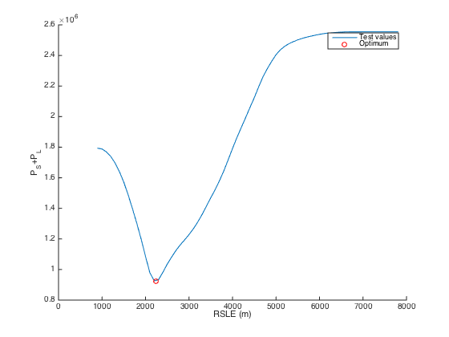
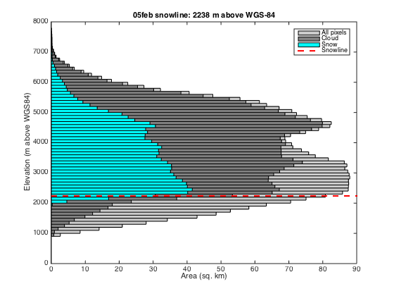

Contents
Load data
Data in WGS84 UTM44N, 20m resolution, extent 340200m 3391600m 402980m 3338560m
% Copernicus 30 m DEM resampled to 20m [z,R]=geotiffread('ROIbb2/dem'); % Sentinel-2 FSC product from MAJA-LIS (Gascoin et al. 2019) d='05feb'; %d='10feb'; f=geotiffread(['ROIbb2/fsc' d]); % pixel area in km2 a=1e-6*R.SampleSpacingInWorldX*R.SampleSpacingInWorldY;
Prepare masks
% no snow mask ixns=f==0; % snow mask ixs=f>0&f<=100; % cloud mask ixc=f>100;
Count pixels by elevation bins
% lower elevation edge z1=round(min(z(:))/100)*100; % upper elevation edge z2=round(max(z(:))/100)*100; % elevation bins edges z_edges = z1:100:z2; % elevation bins centers z_center = z_edges(1:end-1)+mean(diff(z_edges))/2; % count no snow pixels ns = histcounts(z(ixs),z_edges); % count cloud pixels [nc,~] = histcounts(z(ixc),z_edges); [nz,~] = histcounts(z,z_edges); [nns,~] = histcounts(z(ixns),z_edges);
Find snowline elevation
Minimize sum of snow covered pixels below zs and land pixels above zs (Krajci et al. 2014)
pspl=@(x) nnz(ixs&z<x) + nnz(ixns&z>x);
zs=fminbnd(pspl,double(z1),double(z2),optimset('TolX',10));
Test result
figure(1),clf,hold on zx=z1:100:z2; plot(zx,arrayfun(pspl,zx),'-') plot(zs,pspl(zs),'ro') ylabel('P_S+P_L') xlabel('RSLE (m)') legend('Test values','Optimum')
Plot results
figure(2),clf barh(z_center,nz*a,1,'facecolor',.8*[1 1 1]); hold on barh(z_center,(nc+ns)*a,1,'facecolor',.5*[1 1 1]); barh(z_center,ns*a,1,'facecolor','c'); hrf=refline(0,zs); set(hrf,'Color','r','LineStyle','--','LineWidth',2) xlabel('Area (sq. km)') ylabel('Elevation (m above WGS84)') legend('All pixels','Cloud','Snow','Snowline') title(sprintf('%s snowline: %4.4g m above WGS-84',d,zs))